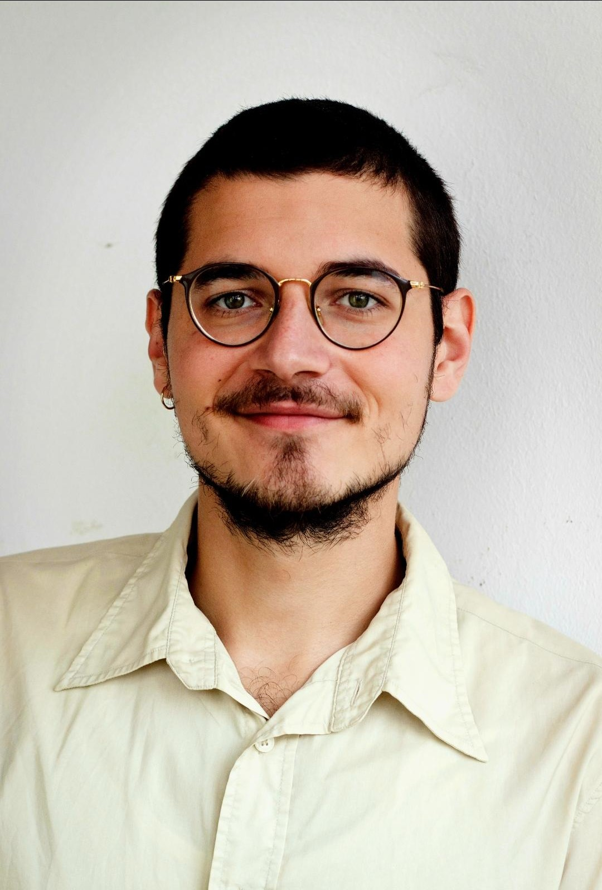

I am a highly adaptable and open-minded computer science master’s student with diverse experience in software development, ranging from full-stack web applications to augmented reality and data simulation. My technical expertise is centered around C#, Unity, and Python, with additional experience in SQL databases and agile methodologies.
Beyond my technical skills, I excel in communication and teamwork. Through my roles at Fraunhofer IIS and Akkodis, I have worked in interdisciplinary and multicultural teams, effectively bridging the gap between technical challenges and collaborative problem-solving. Clear communication, adaptability, and a solution-oriented mindset have allowed me to contribute meaningfully to complex projects while maintaining a focus on the bigger picture.
My versatility enables me to quickly adapt to new technologies, workflows, and environments. Whether creating synthetic data for machine learning, stabilizing holograms for AR applications, or contributing to backend and database solutions in web development, I thrive on learning and applying innovative approaches to challenges.
I am eager to bring my skills and mindset to new opportunities in software development, be it backend systems, data-driven projects, or entirely new challenges.
March 2018 - September 2020
December 2022 - Present